Pesca con forcejeoTug-of-war fishing
El carrete y la caña son tus gestos. RECOGE, SUELTA, JALA — el pez dicta y tú respondes. The reel and the rod are your gestures. REEL, GIVE LINE, PULL — the fish commands, you answer.
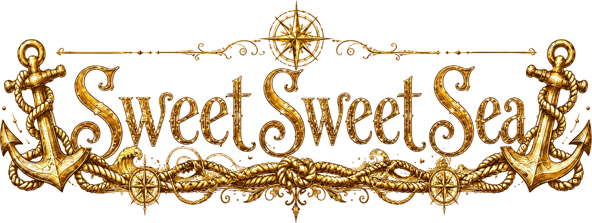
«El mar miente. Sus islas se deshacen en niebla,
y sus noches no siempre te dejan dormir.»
“The sea lies. Its islands dissolve into fog,
and its nights don't always let you sleep.”
Se abrirá con música. Baja el volumen si hace falta. It opens with music. Lower your volume if needed.
Android · PC (Windows) · Steam próximamente Android · PC (Windows) · Coming to Steam
Sus islas se deshacen en niebla, la fortuna de la adivina sentencia el clima y sus noches no siempre te dejan dormir. Its islands dissolve into fog, the fortune-teller's verdicts come true, and its nights don't always let you sleep.
Eres un marinero pobre en un muelle al fin del mundo. De día pescas, rebuscas la deriva, comercias con los vecinos y mejoras tu bote. De noche, el mar cobra: insomnios que se ganan a golpes, asedios de colosos de ojos violeta, y una travesía de tinta negra hacia una ciudad que no debería tener torres. You are a poor sailor on a pier at the end of the world. By day you fish, scavenge the drift, trade with the neighbors and upgrade your boat. By night the sea collects: sleepless sieges, violet-eyed colossi on the planks, and an ink-black crossing toward a city that shouldn't have towers.
El carrete y la caña son tus gestos. RECOGE, SUELTA, JALA — el pez dicta y tú respondes. The reel and the rod are your gestures. REEL, GIVE LINE, PULL — the fish commands, you answer.
La ballena, el calamar, la serpiente… cada una con su carácter. Aliméntalas, témplalas con tesoros y te escoltarán mar adentro. The whale, the squid, the serpent… each with its own character. Feed them, temper them with treasures, and they'll escort you.
Banco, astillero, cambista, la draga del Viejo, la adivina cuya fortuna se cumple, y vecinos con encargos. Bank, shipyard, trader, the Old Man's dredge, a fortune-teller whose verdicts come true, and neighbors with errands.
Calma chicha, niebla, tempestad. Fases de luna que siguen a la luna de verdad, estrellas fugaces y un faro que barre el agua. Dead calm, fog, tempest. Moon phases that follow the real moon, shooting stars and a lighthouse sweeping the water.
La noche, la niebla y lo que canta desde el agua te gastan la mente. Si se rompe, el mar se vuelve negro donde estés. Night, fog and what sings from the water wear your mind down. Break it, and the sea turns black wherever you are.
Tres llaves abren la Puerta Hundida. Cruzarla no termina el juego: lo vuelve más hondo. Bestias más bravas, marineros nuevos jugables. Three keys open the Sunken Gate. Crossing it doesn't end the game — it deepens it. Fiercer beasts, new playable sailors.
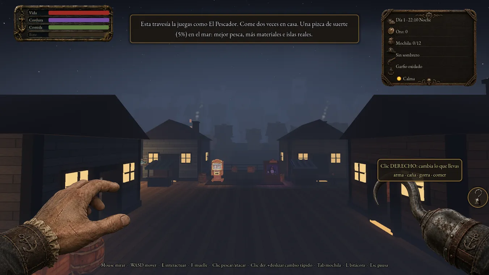
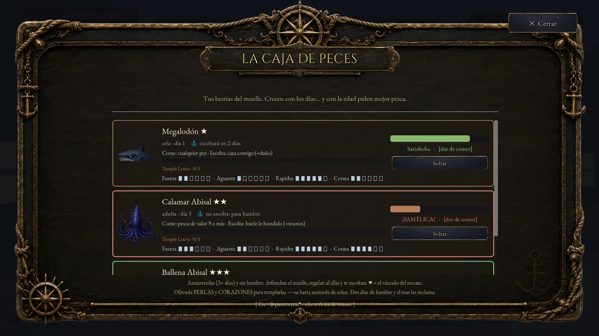
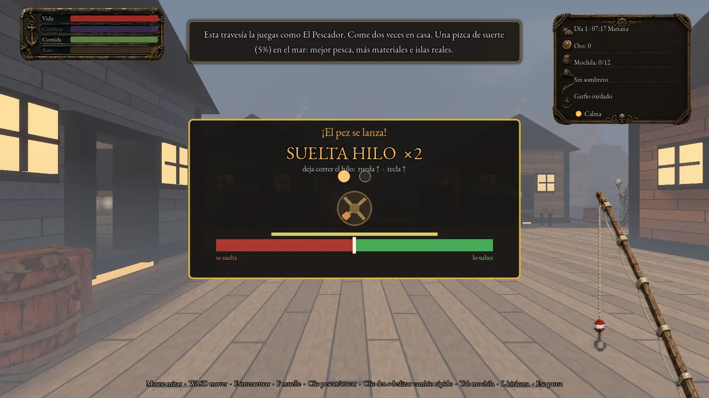
De día pescas, rebuscas y vendes. De noche decides si duermes o zarpas. By day you fish, scavenge and sell. By night you decide whether to sleep or sail.
Con la mente entera la zona buena es casi el doble de ancha. Con la mente rota, el mar te entrega cosas más raras. Pescar de noche paga mejor… y cobra en cordura. With a whole mind the good zone is nearly twice as wide. With a broken one, the sea hands you stranger things. Fishing at night pays better… and charges you in sanity.
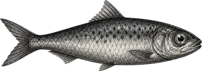
Sardina grisGrey sardine 5 oro · el pan de cada día5 gold · your daily bread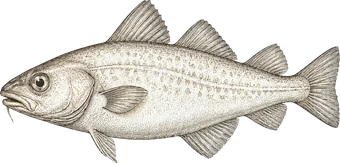
Bacalao pálidoPale cod 9 oro · llena el estómago9 gold · fills the belly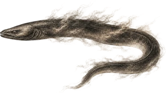
Anguila de nieblaFog eel 14 oro14 gold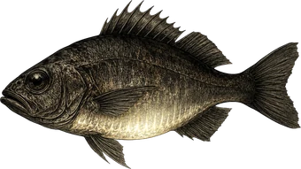
Pez luminoso ★Glowfish ★ 28 oro · comerlo reconforta28 gold · eating it comforts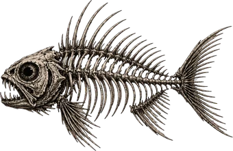
Pez esqueleto ★Skeleton fish ★ 35 oro · solo de noche · perturbador35 gold · night only · unsettling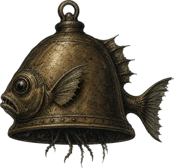
Pez Campana ★Bell fish ★ 60 oro · tañe… y desata una tormenta60 gold · it tolls… and unleashes a storm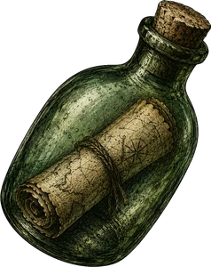
Botella con mapa ★Bottled map ★ revela un tesoro ahí fuerareveals a treasure out there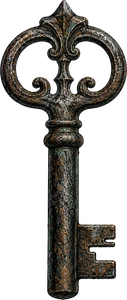
Llave oxidada ★Rusted key ★ tres abren la Puerta Hundidathree open the Sunken Gate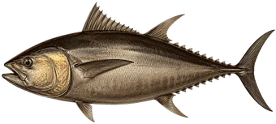
Atún realRoyal tuna 22 oro · la comida grande del profundo22 gold · the deep's big meal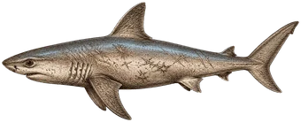
Tiburón sombrío ★Gloom shark ★ 46 oro · pide caña de maestro46 gold · needs a master's rod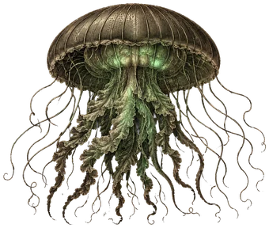
Medusa farol ★Lantern jelly ★ 30 oro · la luz buena de la tinta nocturna30 gold · the kind light of the night ink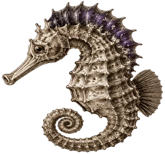
Caballito de la tinta ★Ink seahorse ★ 55 oro · no se come: es joya de colección55 gold · not food: a collector's jewel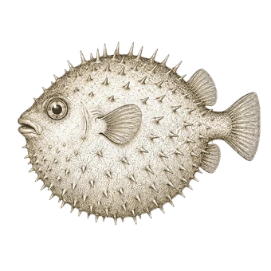
Pez globoPufferfish no pica: huye de ti en el mar. Su carne alimenta… con un veneno suave it doesn't bite: it flees at sea. Its meat feeds you… with a mild venomY una décimocuarta pieza que no lleva retrato porque no queremos dibujarla: de noche, a veces, el sedal sube restos humanos. And a fourteenth catch with no portrait, because we'd rather not draw it: at night, sometimes, the line brings up human remains.
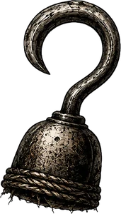
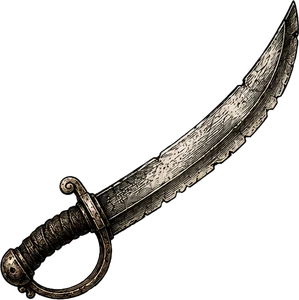
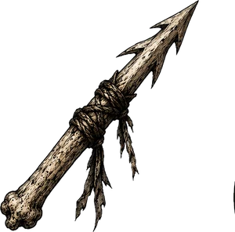
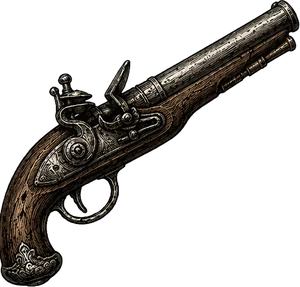
Cada golpe cuesta media ración de comida: aporrear el clic vacía el estómago, y en ayunas pegas más flojo. Cada bestia nace con sus estrellas y su talla, y las estrellas se degradan si te golpea o si el duelo se alarga: mata rápido y limpio, o cobra menos. Every blow costs half a ration: mashing the button empties your belly, and on an empty stomach you hit softer. Each beast is born with its own stars and size, and the stars degrade if it hits you or the duel drags on: kill fast and clean, or get paid less.
De noche y sin lámpara, lo que se acerca es una silueta negra sin nombre hasta que la tienes a once metros — y pega más fuerte y corre más. Solo la luz dice la verdad… y a veces ni la luz: hay siluetas que, al revelarse, no son lo que parecían. At night without a lamp, what approaches is a nameless black silhouette until it's eleven metres away — and it hits harder and moves faster. Only light tells the truth… and sometimes not even light: some silhouettes, once revealed, are not what they seemed.
Fabrica una caña de captura, hiérela primero y lánzale el lazo. La caña siempre se rompe; si aguanta, la bestia se queda a vivir en el agua de tu muelle. Caben tres, o cinco si amplías el establo. Todo lo que nada se puede domar: cada especie pide su nivel de caña y su cebo favorito. Craft a catching rod, wound it first and throw the lasso. The rod always breaks; if it holds, the beast stays in the water by your pier. Three fit, or five if you extend the pen. Everything that swims can be tamed: each species asks for its rod level and its favourite bait.
Lo que domas defiende el muelle de noche, te escolta mar adentro y te deja regalos al alba. Y lo que nace en el nido hereda estrellas, talla, temple y mutaciones — ahí empieza la crianza. What you tame defends the pier at night, escorts you out to sea and leaves you gifts at dawn. And what hatches in the nest inherits stars, size, temper and mutations — that's where breeding begins.
Tu refugio: aquí la niebla es ancha y quieta, la mente se recompone y las tormentas no entran. Your refuge: here the fog is wide and still, the mind knits itself back together and storms don't come in.
Pasean por su zona y cada uno te hace un favor al día si le hablas. Al tercero, te regalan lo suyo. Saludar a todos antes de zarpar es la mejor rutina del juego. They walk their patch, and each does you one favour a day if you talk to them. At the third, they give you what's theirs. Greeting them all before sailing is the game's best habit.
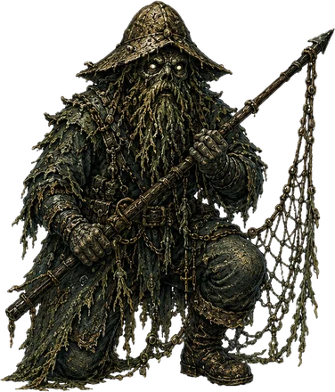
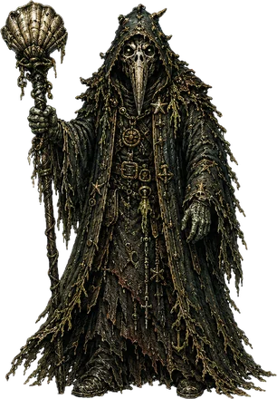
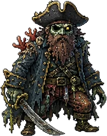
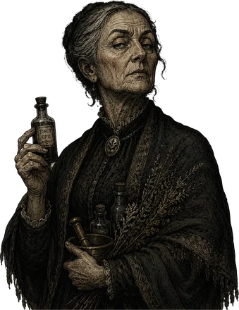
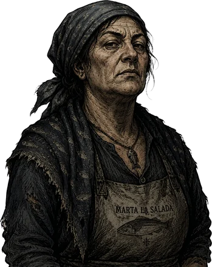
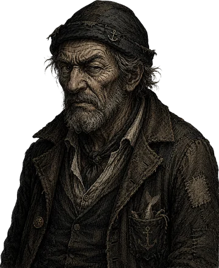
Vender en persona. Te atiende uno de los tres compradores, cada uno con sus manías, y puedes regatear una vez: si acepta subes un veinte por ciento; si lo ofendes, te quita un siete. Selling in person. One of the three buyers serves you, each with their own quirks, and you may haggle once: if they accept you gain a fifth; if you offend them, they take seven percent off.
El mostrador junto a tu casa: exhibe piezas y los vecinos compran solos durante el día, incluso mientras navegas. De noche no pasa nadie. Se amplía a diez huecos y mejor margen. The counter by your house: display your pieces and the neighbours buy on their own during the day, even while you're at sea. At night nobody passes. It grows to ten slots and a better cut.
Cambia unos materiales por otros, y cada día ofrece otros tratos. Es el sitio para deshacerte de lo que te sobra… y para conseguir un colmillo abisal sin tener que cazar al que lo llevaba puesto. She trades one material for another, and every day the deals change. It's where you dump what you have too much of… and where you get an abyssal fang without hunting whatever was wearing it.
El banco forja armas y sube la caña; el astillero repara el casco, mejora la vela y vende lámparas. La luz no es un lujo: de noche, sin ella, lo que se acerca no tiene nombre. The bench forges weapons and upgrades the rod; the shipyard repairs the hull, improves the sail and sells lamps. Light is not a luxury: at night, without it, what approaches has no name.
Lo que guardas ahí sobrevive a tu muerte en el mar. La decisión eterna: ¿vender ya, exhibir con paciencia, llevártelo… o ponerlo a salvo? What you leave there survives your death at sea. The eternal question: sell now, display and wait, take it with you… or put it somewhere safe?
A la puerta de tu casa. Asar un pescado es gratis, pero lo que importa son las raciones que te llevas en la bodega y comes en el mar: cocinas de día y cargas cordura para cuando la noche empiece a sangrarte. By your front door. Grilling a fish is free, but what matters are the rations you carry in the hold and eat at sea: you cook by day and load up on sanity for when the night starts to bleed you.
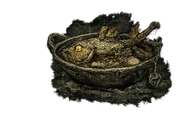
Caldo de sardinasSardine broth +32 estómago · +5 mente+32 belly · +5 mind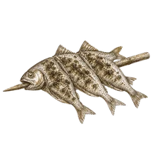
Brochetas marinerasSailor's skewers +36 estómago · +7 mente+36 belly · +7 mind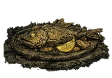
Anguila ahumadaSmoked eel +42 estómago · +8 mente+42 belly · +8 mind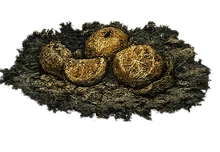
Caldo de huesosBone broth +50 estómago · +20 vida+50 belly · +20 health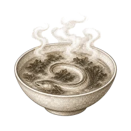
Potaje nebulosoFoggy pottage +26 estómago · +16 mente+26 belly · +16 mind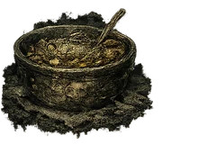
Sopa de algas en tarroJarred weed soup +20 estómago · +18 mente+20 belly · +18 mind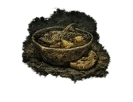
Guiso del fareroLighthouse stew +28 estómago · +24 mente · +10 vida+28 belly · +24 mind · +10 health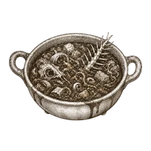
Estofado del abismoAbyss stew +30 estómago · +34 mente+30 belly · +34 mindY tres platos de oficio: alimentan menos porque no pagas el bocado por el estómago, sino por la maña — encienden una ventaja hasta el amanecer. And three trade dishes: they feed you less because you're not paying for the belly but for the knack — they light an edge that lasts until dawn.
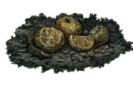
Bocado del domadorTamer's bite hoy tus manos atan sin temblartoday your hands tie without shaking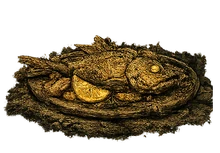
Fritura del cardumenShoal fry hoy lees el agua como el viejotoday you read the water like the old man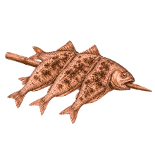
Asado del cazadorHunter's roast hoy tu brazo pega como el martoday your arm hits like the sea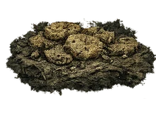
Galletas de la abuela KarenGrandma Karen's biscuits no se cuecen: las regala Carymnot cooked: Carym gives them to youDetrás del muelle, donde nadie mira, dos viejos cacharros zumban en la niebla. Ninguno es un vecino: son máquinas de adivinos y de tahúres, y llevan ahí más de lo que conviene. Behind the pier, where nobody looks, two old contraptions hum in the fog. Neither is a neighbour: they're the machines of fortune-tellers and cardsharps, and they've been there longer than is good for anyone.
Pagas, eliges profundidad y el gancho baja al fondo del puerto: la orilla no da sustos, el fondo paga mejor, el abismo sube lo que no deberías subir. Y a veces la cadena SE TENSA, y ahí decides: seguir o cortar. Seguir puede izar el gordo… o algo vivo — y lo que sube vivo vuelve de noche, más bravo cuanto más hondo lo molestaste. You pay, pick a depth and the hook goes down into the harbour floor: the shallows hold no surprises, the bottom pays better, the abyss brings up what you shouldn't. And sometimes the chain GOES TAUT, and then you choose: keep going or cut. Keeping going may haul up the big one… or something alive — and what comes up alive comes back at night, fiercer the deeper you disturbed it.
En el fondo duermen diez baratijas de ahogados. El Viejo paga por verlas en su estante. No son tesoro: son lo que alguien llevaba encima. Ten drowned men's trinkets sleep down there. The Old Man pays to see them on his shelf. They aren't treasure: they're what somebody was carrying.
La adivina mecánica no cobra, pero solo habla una vez por franja del día: tres lecturas como mucho. Casi todas son vagas —puro ambiente—, una de cada cinco es concreta y carga los dados a su favor… y muy de vez en cuando suelta un oráculo con hora exacta. The mechanical fortune-teller charges nothing, but only speaks once per part of the day: three readings at most. Almost all are vague —pure atmosphere—, one in five is specific and loads the dice its way… and very rarely it gives an oracle with an exact hour.
Cuanto más detallada es la lectura, más rara y más segura. Una frase poética es una corazonada; una con hora exacta no lo predice: lo sentencia. Así es como aparece el volcán. The more detailed the reading, the rarer and the surer. A poetic line is a hunch; one with an exact hour doesn't predict it: it sentences it. That's how the volcano shows up.
No es solo un retrato: cada marinero cambia cómo se vive el mar. It isn't just a portrait: each sailor changes how the sea is lived.
La historia base es la del Pescador. Los otros tres se desbloquean dando vueltas a la Puerta Hundida: una vuelta, un marinero. The base story is the Fisherman's. The other three are unlocked by looping through the Sunken Gate: one loop, one sailor.
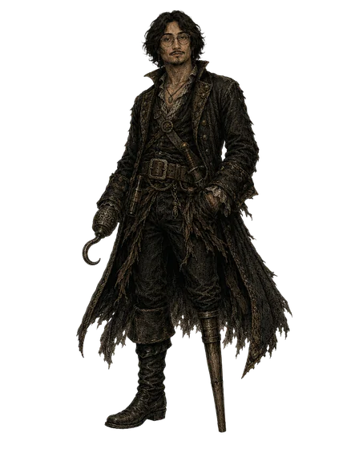
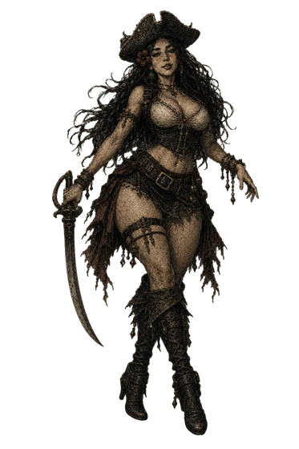
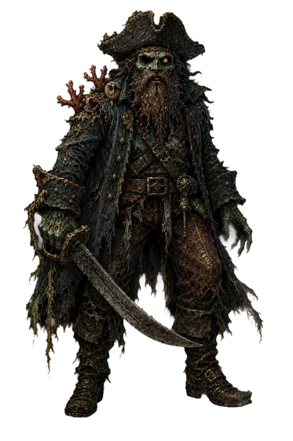
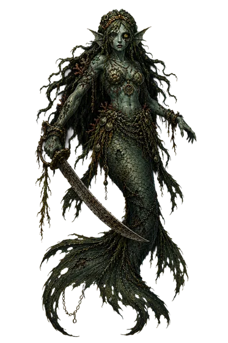
Y hay una quinta. No se elige, no se compra y no aparece en la lista: se le encuentra disparándole a la luna. Quien la conozca, que no lo cuente. And there is a fifth. She can't be chosen, bought, or found in the list: you meet her by shooting at the moon. Whoever knows her, let them keep quiet.
Cada criatura tiene un poder propio… y ese poder crece con cada vuelta que das a la Puerta. Every creature has a power of its own… and that power grows with every loop through the Gate.
No tiene un color: los tiene todos. Cruza dos bestias de la misma especie, amaestradas y sin hambre, y el nido de la caja de peces te dejará un huevo. La cría hereda estrellas, talla, temple y mutaciones… y una de cada sesenta y cuatro nace así. It has no colour: it has all of them. Breed two tamed, well-fed beasts of the same species and the nest in the fish crate will leave you an egg. The calf inherits stars, size, temper and mutations… and one in sixty-four is born like this.
todos los colores · oro ×4 · una ★ extra all colours · gold ×4 · one extra ★
De día el mar te da de comer. De noche, cobra. By day the sea feeds you. By night, it collects.
Puedes dormir desde las nueve… si el mar te deja. La luna sigue las ocho fases de la luna de verdad, y cada noche del calendario tiene su carácter. You can sleep from nine… if the sea lets you. The moon follows the eight phases of the real moon, and every night on the calendar has its own character.
Hay noches que no te dejan cerrar los ojos: algo camina por los tablones y el descanso hay que ganárselo a golpes. La noche siempre nombra su causa — ningún castigo llega sin decir de dónde viene. Some nights won't let you close your eyes: something walks the planks and rest has to be won by force. The night always names its cause — no punishment arrives without saying where it came from.
Cuando el muelle es asediado, sube algo que no cabe en tu bote. Tiene escudo, trae oleadas y los tambores de guerra no paran hasta que uno de los dos se hunda. Tus bestias amaestradas salen a defender contigo. When the pier is besieged, something surfaces that wouldn't fit in your boat. It has a shield, it brings waves, and the war drums don't stop until one of you sinks. Your tamed beasts come out to defend it with you.
Si la cordura se rompe, el mar se vuelve de tinta donde estés. Al fondo hay una ciudad que no debería tener torres. Se llega por tramos, y cada tramo cobra su peaje. If your sanity breaks, the sea turns to ink wherever you are. At the far end there's a city that shouldn't have towers. You get there in stretches, and every stretch takes its toll.
Cada temporada dura veinticuatro días y trae cuatro noches que no son como las demás. Todas regalan algo y cobran algo… y una jamás se anuncia: se descubre zarpando. Each season lasts twenty-four days and brings four nights unlike the others. They all give something and charge something… and one is never announced: you find it out by sailing into it.
No todo lo que trae la noche viene a cobrarte. Una vez por temporada el muelle se echa a la calle. Not everything the night brings comes to collect. Once a season the pier spills into the street.
Lo que el agua cambia… y lo que el agua esconde. What the water changes… and what the water hides.
Algunos amaneceres el mar entero cambia de color. Some dawns the whole sea changes colour.
El fondo de esta página son esas mareas, con sus colores de verdad — los mismos que el juego le da al agua. Espera un poco y las verás pasar. The background of this page is those tides, in their real colours — the very ones the game gives the water. Wait a little and you'll see them pass.
Para el juego esto es el final; para el mar, un rodeo. Ahí fuera hay tierra que no existe, tierra que sí, y una puerta bajo el agua. For the game this is the ending; for the sea, a detour. Out there is land that isn't, land that is, and a door under the water.
Para el bote y el mar empieza a tentarte: la calma, una cortina de niebla, una campana… y al fondo una isla con una cueva-calavera cuyos ojos delatan lo que es. Desembarcar es tirar los dados: ilusión, trampa, tesoro o maldición. Stop the boat and the sea starts tempting you: the calm, a curtain of fog, a bell… and far off an island with a skull-cave whose eyes give away what it is. Going ashore is a roll of the dice: illusion, trap, treasure or curse.
Si era trampa, la isla entera escora y se hunde ante tu proa — remolino, burbujeo, espuma— y la bestia sale del mismo remolino ya cazándote. Nada de monstruos dormidos: el mar no pierde el tiempo. If it was a trap, the whole island lists and sinks before your bow — whirlpool, bubbling, foam— and the beast comes out of that same whirlpool already hunting you. No sleeping monsters: the sea doesn't waste time.
A veces la quilla toca arena: el brillo era espejismo, pero la isla es real. Bajas a pie, y en algún rincón hay una cruz de tablones. Cinco paladas — y cada palada despierta a los ahogados. A la quinta sube el cofre. Sometimes the keel touches sand: the glimmer was a mirage, but the island is real. You go ashore on foot, and somewhere there's a cross of planks. Five spadefuls — and every one wakes the drowned. On the fifth, the chest comes up.
Las gaviotas no vuelan sobre mentiras: si unas aves la sobrevuelan en círculo desde lejos, esa isla no miente. Gulls don't fly over lies: if birds circle above it from afar, that island isn't lying.
Cuando la esfera de la adivina se llena de humo negro, la tierra tiene fiebre: el muelle tiembla dos días y al tercer amanecer humea una montaña que ayer no existía. Al pie late una grieta, y arrancarle el Corazón de Magma despierta a los cultistas del fuego. Ese corazón afila tu arma un nivel entero: un filo que no se compra. When the fortune-teller's orb fills with black smoke, the earth has a fever: the pier shakes for two days and on the third dawn a mountain that wasn't there yesterday is smoking. At its foot a fissure beats, and tearing the Heart of Magma out of it wakes the fire cultists. That heart sharpens your weapon a whole level: an edge no shop sells.
Siempre al norte, mar negro adentro, una silueta de torres negras atraviesa la niebla. No es ilusión: es de piedra, y su mole frena el casco. Avistarla cuesta ocho de cordura, y el Padre del Abismo ronda sus aguas — llegar es esquivarlo o matarlo. En las vueltas ya no guarda él la puerta: el mar manda a su Rey, siete cabezas y siete coronas. Always north, deep in the black sea, a silhouette of black towers cuts through the fog. It isn't an illusion: it's stone, and its bulk stops your hull. Sighting it costs eight sanity, and the Father of the Abyss patrols those waters — getting there means dodging him or killing him. On later loops he no longer guards the door: the sea sends its King, seven heads and seven crowns.
Al pie de las torres, tres cerraduras de coral. Cada llave oxidada que pescas de noche es una decisión: ¿el cofre de hoy, o la Puerta? Dentro está el tesoro de todos los ahogados, el Corazón del Mar y la Corona del Fin del Mar. At the foot of the towers, three coral locks. Every rusted key you fish up at night is a decision: today's chest, or the Gate? Inside lies the treasure of all the drowned, the Heart of the Sea and the Crown of the World's End.
Y entonces la Puerta susurra su oferta: volver al primer día conservando todo lo tuyo. Si aceptas, despiertas en tu cama, día uno, con tu oro, tu equipo y tus bestias… y el mar vuelve a mentir, esta vez con más hambre. El final es la mentira más grande del mar. Por eso se puede vivir tantas veces. And then the Gate whispers its offer: go back to the first day and keep everything that's yours. Accept, and you wake in your bed, day one, with your gold, your gear and your beasts… and the sea lies again, hungrier this time. The ending is the sea's biggest lie. That's why it can be lived so many times.
La versión de PC llega a Steam con 30 logros y guardado en la nube. Estamos preparando la ficha; en cuanto esté arriba, podrás añadirlo a tu lista de deseados. The PC version is coming to Steam with 30 achievements and cloud saves. The store page is in the works; as soon as it's up you'll be able to wishlist it.
Ficha en preparaciónStore page in progressEl juego entero: días sin límite, todas las ranuras de partida, los cuatro marineros y el vínculo con la versión de PC por WiFi. The whole game: unlimited days, all save slots, the four sailors and the WiFi link with the PC version.
Google PlayDiez días de mar, una ranura de partida y El Pescador. Sin anuncios y sin compras: es una prueba honesta, no un cepo. Ten days at sea, one save slot and The Fisherman. No ads, no purchases: an honest demo, not a trap.
Probar gratisPlay for freeSin anuncios. Sin compras dentro del juego. Sin cuentas. Sin recolección de datos — y aquí está la política que lo dice. No ads. No in-app purchases. No accounts. No data collection — and here's the policy that says so.
Si juegas en el PC y tienes el juego en el móvil, los dos se amarran por el WiFi de casa y el teléfono deja de ser un teléfono: se vuelve el instrumental de tu barco. No hay cuentas, ni servidor, ni internet — se hablan solos dentro de tu red. If you play on PC and have the game on your phone, the two moor over your home WiFi and the phone stops being a phone: it becomes your ship's instrument panel. No accounts, no server, no internet — they talk to each other inside your network.
Nadie se amarra a tu barco sin permiso: cuando un teléfono lo pide, el PC pregunta «¿lo aceptas, capitán?». Y si el WiFi se cae, vuelve solo. Nobody moors to your ship uninvited: when a phone asks, the PC asks you "do you accept, captain?". And if the WiFi drops, it comes back on its own.
Todavía no hay lista de correo: no recogemos datos de nadie. Cuando la ficha de Steam esté publicada, este hueco tendrá el botón de lista de deseados. Mientras tanto, escríbenos. There's no mailing list yet: we collect nobody's data. Once the Steam page is live, this spot will hold the wishlist button. In the meantime, write to us.